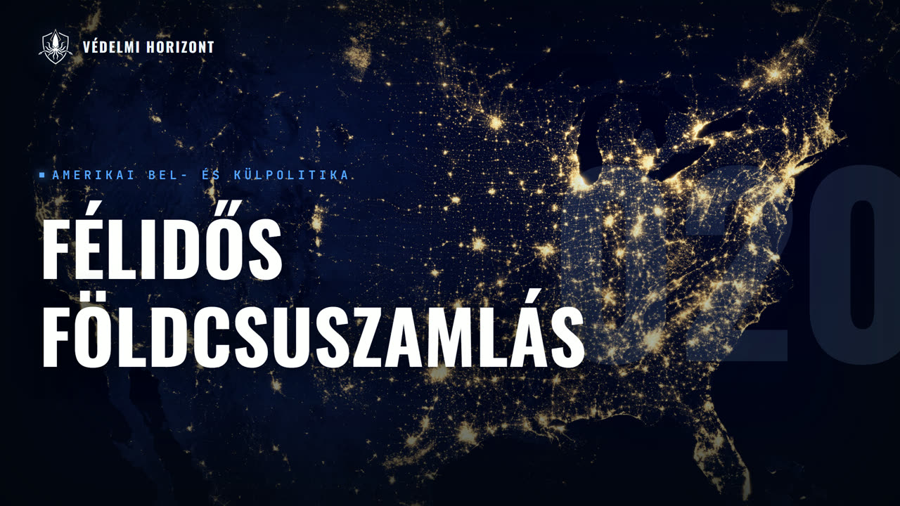

VÉDELMI HORIZONT #020 – Amerikai félidős választások Magyarics Tamással és Csizmazia Gáborral

Leírás
Résztvevők: Pásztor Ákos, Zsebeházy Bálint, Magyarics Tamás, Csizmazia Gábor
Üdvözöljük a Védelmi Horizont kutatóműhely huszadik adásában!
Ebben az adásban Magyarics Tamás, az ELTE professzor emeritusza és amerikanista, valamint Csizmazia Gábor kutató segít végiggondolni, mit jelent pontosan a 2026. november 3-i amerikai félidős választások eredménye. Miért lett ennyivel nagyobb a demokrata győzelem a vártnál, és mennyiben szól ez Trump népszerűségéről, illetve az inflációról és a megélhetési költségekről? Hogyan lehet, hogy a képviselőházi és a szenátusi esélyek ennyire eltértek egymástól, és milyen szerepet játszott ebben a kerületek átrajzolása, illetve Lindsey Graham halála? Kik az új arcok a demokrata oldalon, és mit mutat a latinó, illetve afroamerikai szavazók elmozdulása? Mi várható a január 3-ig tartó átmeneti időszakban a költségvetés, a filibuster és az elakadt szenátusi kinevezések körül, és kik jöhetnek szóba 2028-ban mindkét oldalon? Végül szó esik arról is, hogyan hat a választás eredménye az iráni légicsapásokra és az ukrajnai támogatás jövőjére a Kongresszusban.
Leirat beszélőnként
Üdv mindenkinek! Ez itt a Védelmi Horizont. Az a podcast, ahol diplomáciai, gazdasági, hadiipari és biztonságpolitikai szempontok alapján nézünk rá ugyanarra a témára, egyszerre, egy asztalnál. A mai témánk az Amerika Egyesült Államok félidős választásainak eredményei, illetve azok következményei. A nevem Pásztor Ákos, és most négyen ülünk a mikrofonok mögött. Velem szemben csapatunk tagja, Zsebőházi Bálint,
Üdvözlök mindenkit!
A két meghívott vendégünk pedig Magyarics Tamás, az ELTE professzor emeritus-a, amerikanista.
Jó napot kívánok!
És Csizmazia Gábor, az ENKEL John Lukács Intézetének kutatója.
Köszönöm, hogy mindenki szeretett el.
Köszönjük szépen, hogy elfogadták meghívásunkat, nagyon megtisztelnek minket. Tehát akkor szerintem térjünk is rá a kérdésekre. Elsősorban azt kérdeznénk, hogy mi történt 2026. november 3-dik után, mit döntenek el pontosan a felidős választások, és kik milyen tisztségekre kapnak, illetve kaptak mandátumot most.
Hát nyilvánvalóan a legnagyobb szenzáció az, és azért mindenkit gyakorlatilag meglepetésként ért, hogy a demokraták ilyen arányba győztek. A demokratáknak a győzelme a képviselőházban borítékolható volt, a szenátusban is az esélyek növekedtek. De az, hogy ilyen mértékben győzött a demokratapárt, az azért váratlan volt. Sokan keresik a válaszokat. Általánosságban hozzá kell tenni azt, hogy azért nem ennyien szeretik a demokratapártot. Eléggé jelentős részben ez egy proteszavazás volt, és ez utóbbi időben jellemző az amerikai választásokra, elnökválasztásra kezdve főadás választásokig. A második dolog az, hogy a republikanus párt eléggé rossz, és főleg az elnök eléggé rosszul szerepelt az utóbbi időben. Nagyon alacsony az úgynevezett elfogadottsági indexe, 31% ilyen alacsony évtizedek óta senkinek nem volt. És hagyományosan az egyik alaptörvény az, vagy alapszabály az, hogy a földrőlis választások nem csak a képviselőjelöltekről és a szenátorjelöltekről szólnak el, hanem az elnökről egyfajta referendumnépszavazás is. Igaz, hogy az elnök nem volt rajta a szalazó cédulákon. Az is igaz, hogy Trump azt mondta, hogy ha rajta lett volna, akkor a republikások csak nyernek ilyen cunami módra, amit hát azért inkább Donald Trump irodai munkásságának tudhatunk be. És inkább az az igaz, hogy egy ilyen alacsony támogatottságú elnök inkább visszahúzta a republikanus pártnak egyes előttjeit, illetve amikor tevéken részt vett abban, hogy majdnem mikromanagereként Választott képviselőjelölteket, illetve szenátorjelölteket. Akkor olyanokat választott, akik eleve már hendikeppel indultak a képességeik, erőilletük és általában az adottságaik miatt. Ez persze nem indokolja egyedül, hogy a republikans párt ilyen rosszul szerepelt. Hát nyilvánvalóan itt mindenki emlegeti egyrészt az iráni háborúnak a következményeit, a gazdasági helyzetet, a megjelentési költségeket. És amikor azt mondtam, hogy a demokratapártot azért annyira nem szeretik, mert érdekes módon felmérés szerint még mindig lépszerűbb a republikans párt, mint a demokratapárt országosan. És a másik dolog az, hogy azért nem nagyon lehet tudni, hogy a demokrata párt mit fog tenni és mit nem fog tenni. Főleg azért, mert hát nem mondom, hogy teljesen erdőntetlen a küzdelem vagy az erdőntetlen a párt két fő szárnya között, a mérsékertek és a radikálisok közötti Viszonylag ilyen pillanatban azért a mérsékletek erősebbek, de valószínűnek tűnik az azért, hogy a radikálisok, tehát a szélsőbal, a méregzöldek, a SZKVAD és azokat, akiket most választottak meg, kicsit balra fogják húzni a pártot. És hát a kérdés az, hogy ez mennyire fog jót tenni a demokratapártnak 2028-ban, mert az amerikaiaknak a többségeink mindig az inkább az értékeket tekintve jobb közép és nem bal közép, és nem is szóval nem szélső bal.
Igen, én annyit tennék csak hozzá, hogy találódó nagyon jól elmondott szerintem mindent, és egész jó képet festett szerintem, vagy egész találóképet festett az erőviszonyokról, meg úgy általában a politikai közhangulatról, és a demokratapártot, meg a republikánus pártot illetően is, és persze az elnököt illetően. Ugye, amit még hozzá kell tenni, hogy ugye Amerikában, amikor választásokat tartanak, akkor általában az államok bonyolítják le, Ezért államonként eltérő körülmények között feltételet mellett szavazhatnak, és ez a tartalomra is igaz, tehát időnként még egy-egy államban összekötik adott esetben népszavazással vagy különböző állami tisztviselőknek a megválasztásával, újraválasztásával. Ezek lehetnek adott esetben most általánosabban beszélek ügyészek, bírók, egyéb különleges bírói testületetnek a tagjai, Különböző kerületi, mondjuk alapesetben oktatási vagy bármilyen más témával, tűzoltósággal vagy bármilyen más témához kapcsolódó ilyen hivataloknak vagy intézményeknek a vezetői. És lehetnek kormányzók. Konkrétan jelen esetben 36 államban és még 2 területen választottak, vagy kaptak lehetőséget a Állampolgárok arra, hogy kormányzót válasszanak, vagy állami szintű, vagy helyi szintű, ha úgy tetszik, vezetőt válasszanak a végrehajtó hatalom élére. Ez azért érdekes, mert a demokraták nem csak az elméletes szövetségi választásokon, tehát a képviselőházban vagy a szenátusban szereztek helyeket és vettek el helyeket a republikánusoktól arányosan nagy mértékben, Hanem egyúttal, amikor betörtek a republikánus hátországokba, Texas, Iowa, Ohio, Kansas, Észak-Kolyna, Dél-Karolina, akkor nem egy esetben ez kormányzói helyeket is jelentett. Tehát Ohio-ban, Iowa-ban és Texas-ban például megszerezték a kormányzói széket, a demokratátmányait a republikánusoktól elvették, és ez azért is érdekes, mert Valószínűleg ebben is szerepet játszott a Donald Trump és az adminisztráció választók általi megítélése, de hogy ez már tényleg tulajdonk történetnek kellene lennie. Tehát a föderális rendszerben az, hogy Texas államban hogyan zajlik a kormányzás, tehát állami szinten, aztán végképp egy külön történetnek kell lennie a szövetségi kormányzathoz képest. Időnként persze ez a kettő találkozhat egy-egy témánál, lásd határvédelem, de alapvetően az, hogy Ez a kék hullám, vagy kék cunamia, aki ugye így nevezi a demokratáknak ezt a tényleg földcsőszablásszerű győzelmét, az, hogy ez tulajdonképpen az állami szinten is érződött, az jelzi, hogy mekkora gondok voltak itt a republikánus oldalon.
Nekem az lenne itt a kérdésem, hogy a választások előtt igazából az Economist-nak az elemzéséből azt hallgattam meg podcast-szerűen, és abban például azt mondták, hogy a szenátusra olyan 50-50% van, hogy azt most ki fogja nyerni Képviselőházra meg olyan 90 plusz, hogy az demokrata lesz. Pontosan miből származik, milyen sajátosság, strukturális sajátossága van a rendszernek, hogy ennyire más a kettő?
És akkor Gábor... Ugye abból alapvetően, hogy az Alsóházban két évente választják meg a képviselőket, az összeset, tehát jelen esetben mind a 435 képviselőt. A kalkulációk, vagy a különböző spekulációk most akkor hány helyet szerezhetnek a republikánusok meg a demokraták? Általában az jellemző a szenátusra is záróje, bejegyzem meg, vagy sokáig ez volt jellemző, és ebből a szempontból ez most egy törés volt ez a választás, hogy ugye voltak, meg most is vannak azért helyenként demokrata fellegvárak, meg republikánus fellegvárak, ugye mondjuk New York, Illinois, meg Kalifornia állami szinten legalábbis a szenátorokról van szó azért demokrata fellegvár már évek óta. Az említett Texas, Kansas, Dél-Carolina, meg republikánus fellegvárnak számít. Tehát következetesen több választáson keresztül a republikánus, illetve a demokrata jelölt viszi a mandátumot. Ugye ezt többféleképpen lehet számolni, de általában azt nézik, hogy az utóbbi három választás, tehát a két félidős, meg az elnök választás, illetve a kormányzó választás esetében is következetesen piros vagy kék lesz az az adott állam, illetve terület, meg az adott esetben körzet is. Na most az alsóházban ez azért érdekes, mert ugye átrajzolták több helyen a körzeteket. Ezt ha jól emlékszem, a republikánusok kezdték el Texasban, és akkor a demokraták ellen válaszoló Kaliforniában, és akkor ez így végig söpört majdnem egy tucat államon az elmúlt másfél évben. Vegyes eredménnyel a republikánusok összességében hatékonyabbak, vagy ügyesebbek voltak ilyen téren, és éppen ezért még nyáron arról volt szó, hogy ennek a Hát körzett átrajzolásnak az eredményekép, ami teljesen legális, csak legfeljebb nem etikus, de mondom mindkét oldal évek óta alkalmazva, sőt tulajdonképpen egy idős talán az amerikai köztársaság történelmével. Szóval, hogy ennek eredményekép, még nyáron arról volt szó, hogy a republikánusok nagyjából egy 5-6 helyet tudnak szerezni pusztán azért, mert számukra kedvező módon rajzolták át bizonyos államokban A demokraták is próbálkoztak ezzel, csak nem sikerült, volt, hogy a legfelsőbb bíróság mondta azt, hogy ez így ebben a formában nem működik. Na most ez az előny, amit szerezhettek ezzel a republikánusok, ezzel elolvadt, de lényegében ezért voltak bizonytalanságok, vagy szabad ezt a rumsfeldi idézetet használni, ismert, ismeretlenek, hogy tudta mindenki, hogy ez egy tényező, csak nem tudták, hogy végül is ez mennyire hat majd a végeredményre. A felsőházban egyszerűbb a történet, mert ugye ott hat évente van választás és ugye a száz helynek nagyjából egyharmadáról szavaznak. Most idén 35 volt ez, aztán 34-nek kellett volna lennie, de 35 helyről szavaztak, mert ugye Lindsey Graham elhúnyt még júliusban és az ő testvére, Huga volt az, aki átmenetileg betöltötte Lindsey Graham helyét és egyúttal indult is a szenátori székért. És így lett 35. És ugye annak tükrében, hogy az egyes választások alkalmával republikánus fellegvárak vagy demokrata fellegvárak kerülnek megmérettetésre, ennek tükrében szokták azért úgy kalkulálni, hogy kedvezőbb vagy jobban lejt a pálya éppen a republikánus vagy demokrata félnek. Ezért volt szó arról még nyáron, hogy a képviselőház bizonytalan, de a papírforma alapján, ahogy a tanár úr is mondta, borítékolható, hogy véletlenül a demokraták viszik, csak legfeljebb kis többséggel. Míg a szenátust még nyáron sokan azt mondták, hogy itt inkább megőrzik a többségüket hajszálvékonyan a republikánusok, esetleg egy 50-50, tehát 50-50 arány jön ki. Még az is jól lett volna nekik, mert ugye akkor a J.D. Evans halálnök a szavazategyenlőségnek, vagy padhelyzetnek az eldöntője. Csak aztán menet közben ugye történt, ami történt, és végülis ez az előny is elveszett. De ezért volt az, hogy különböző kalkulációk vagy számítások voltak a tekintetben, hogy milyen arányokra lehet számítani a felsőházban és az alsóházban. És ez volt talán az egyik legnagyobb arconcsapás a republikánusok számára. És talán mondhatjuk, hogy meglepetés is a nagy többség számára, hogy ilyen nagy arányban győztek a demokraták. És csak még egy utolsó, rövid gondolat. A közveleménykutatások és a Az ilyen predikciós modellek, meg különböző ilyen fórumok, mint például a Polimarket alapján lehetett számítani a demokrata győzelemre még a szenátusban is, de nem ilyen arányokkal. Tehát ott azért alapvetően alul mérték ezúttal még a demokratákat is azok a közéleménykutatók, akik egész eddig egyébként a republikánusokat és főleg a Trumpi szavazótábort mérték alul. És ezért volt az, hogy itt az elmúlt Több mint két-három hónapban tényleg a szenátus szerintem senki nem merte biztosan megjósolni, legalábbis így ebben a formában nem, hogy ilyen sok helyet fognak majd vinni a demokraták.
Hozzátenni az abszolút alapos és korrekt elemzés volt. Egy-két személy dologra hívnám fel a figyelmet. Ez a Texas-i, ahol Texasban hagyományosan republikások nyernek. És hát ezt a fügyészt nyomta be gyakorlatilag Trump. Egy olyan potenciális előtt ellenében, aki évtizedek óta szinte már Texas-t képviseli John Cornyn-n, egy mérsékeltebb republikáns, a sejette Ken Paxton-t, aki hát talán mondtam, vagy nem mondtam, de eléggé megkérdezhető magánéleti szakmai és egyéb háttérrel rendelkezett. Viszont hizelgett Trumpnak, és ez volt az a pont, ahol őt berakták. Amit Gábor mondott, az a dél-Karoliné eset. Darling Grahamnek semmi köze nem volt eddig a politikához egyedüli. Mondjuk előnye az volt, hogy az Erhunyi szenátornak a huga, de hát ebből még nem keletkezik, hogy ő is Egy politikus sarkadt és teljesen alkalmatlannak tűnt végül. Aztán itt ez a méni dolog, ott úgy tűnt, hogy a republikások simán nyernek, mert ott a demokratáknak kellett levenni a pályáról egy demokrata jelöltet, Mindenfajta, hát mondjuk ilyen szexuális és egyéb erőszak kérdésekbe futott bele. Viszont Susan Collins azzal kampányolt, hogy ő nem egyfajta báb. Tehát ő időnként Trump ellen szavazott, sőt megszavazta 2020-ban az impeachment-et. Viszont Collins aztán már ötödik, vagy nem tudom hányadik ciklusát történt, ez lett volna a hatodik, és hát nem tartották eléggé karakteresnek. A másik adat ott volt Michigan, ahol nagyon mélysékelt, de se ezre se bűze. Se ilyen, se olyan karakter volt Mike Rogers, vele szemben Abdullah Sayed, aki ugyancsak megkérdezhető háttérre rendelkezik, az iszlám testvériség és sok minden egyéb, viszont sokkal jobban kampányolt, izgalmasabb idézőjelben. Jelölt, és hát idénként azért vannak érdekes jelölések, és minnesótában Peggy Flanagan megválasztották demokrata szenátornak, annak ellenére, hogy a minnesótai demokraták óriási korrupciós ügyekbe futottak bele. Az utóbbi időben a szomáliaiaknak adtak eléggé komoly összeeket, plusz az egyik képviselő nőjük, Ilhan Omarnak volt ez az érdekes ügye, amikor hát felvetették azt, és ezt nem tudta az érte, és eddig nem távolta hitelt érdemben, hogy a saját bátyához ment feleségül. hogy Amerikába kerülhessen. Ugye ő erre azt mondta, hogy tudomásos szint nem. Most hát nyilvánvalóan mindenki arra gondol, amire akar. Szóval eléggé mondjuk kétes karakterek is fölbukkantak, illetve Alaszkában a demokraták alkalmazták azt a trükköt, hogy ugyan a nevűt ráindítottak a republikáns jelöltre, és ez a jelölt, ez a Donald Sullivan 3600 szavazatot kapott, és most a demokrata jelölt pár száz szavazattal vezet. A republikással szemben. Tehát azért nyilvánvalóan a politika egy olyan dolog, amit annak idején talán Bismarck érte a legplasztikusabban, aki azt mondta, hogy mind a virsicsinálás, nem szabad nézni, hogy miből és hogyan készül, mert ha az ember egyszer látta, akkor többet a közelébe nem megy. Tehát itt is azért eléggé sok húzás volt mindkét részről. Gábor említette ezeket a kongresszusiai körzeteknek az átformálását, ezen magyarul gerrymandering, de mindkét oldalon, plusz még az a karaktergyilkosságok mind a két oldalon. Nagyon magas hatásfokkal működtek. És így visszatérjük arra, amit az elején mondtam, hogy nagyon sokan nem valakire szavaztak, hanem valaki ellen szavaztak inkább. És ez országosan és így személyekkel elmondva is nagyon gyakorlatilag kimutatható.
Nagyon szépen köszönöm, hogy felhozta Abdul El-Sayed nevét. Ugyanis az lett volna a kérdésem, illetve most az is, hogy kik voltak, vagy kik az új arcok a demokratáknál, akik így nagy sikert arattak, illetve akár már a 2028-as elnökválasztáson, akár később fontos szerepet töltenek be a párton, akár a párt bal szárnyáról nézve, akár mondjuk középről.
Hát most ilyen pillanatban, ha kezdhetem, jelenleg azért nem gondolom, hogy akik most befutottak, azok azért főszerpet fognak játszani, bár már többek között Az egyik új megválasztott szenátor, ilyen szenátor Dél Karolinából már pedzegett egy interjúba, hogy pártgeneráció váltásra lenne szükség a párt vezetésébe. Tehát főleg a szenátoroknál csak Schumer és a többiek azért már megették a kenyerük javát. Ugyanezt hangoztattak különben a képviselőházban az okáziók kórtezésre ezek az ifjú törökök. Egyetlen egy török közöttük, vagy török származású, de hát ugye úgy nevezik-e politikát be ezeket a fertőlekvő ifjúkat. Ami érdekesség, jelenleg persze nem mindenhol, de nagyon sokat mondó az, hogy ha megnézzük, hogy kik futottak be, ugye említette Peggy Flanagan, ő hát őslakos hátterű. Van egy másik őslakos hátterű is, aki befutott. Aztán New Hampshireből egy nyíltan meleg jelölt futott be a demokratáknál. A kormányzóknál Georgia-ba egy fekete nő, Florida-ba fekete férfi, de republikánus. Hogyha megnézzük a kaliforniai kormányzóválasztást, Xavier Becerra, a latinó hátterű, Megnézzük Texasba a háttereket James Tallarico, illetve Gina Hinojosa, mind a kettő latinó hátterű. Tehát lehet látni azt, hogy latinó, fekete, ilyen hátterűek jönnek föl. És a republikáns pártnak többek között ez lehet az egyik baja. Tehát a republikáns pártothoz időn keresztül a fehér emberpártyák nevezték, ez már nem teljesen igaz, de egyrészt a fehér hőfiaknak a kétharmada republikánus szavazó, a fehéreknek a számaránya kezd csökkenni az amerikai lakosságon belül. A második dolog az, hogy azokat, akiket sikerült a republikáns pártnak 2024-ben a latinók meg a feketék közül maguk mögé állítani, azok közül nagyon sokan elpártoltak. Mert nem kapták azt a kormányzatot, amit vártak tők, főleg ugye nem arról van szó, hogy őket nagyon érdekelné az ukrán-orosz száború. Szerintem most se tudják, hogy hol van Ukrajna. Nagy többségkörben nem tudja, amikor az Ukrán Oroszszából kitört, akkor volt valami fölmérsés, kétharmad, ember kétharmada ott Skandináviában meg Észak-Afrikában kereskedte Ukrajnát, pedig hát mégsem mondjuk egy Szlovénia, vagy mit tudom én, Sierra Leone. Ez egy 50 milliós ország, óriási területe, de mindesetre ők főleg azért pártottak el, mert a megjelentési költségek nem csökkentek. Trump ugye mindig azt mondta, és itt azért Trumpnak a fölhősége megint csak kimutatható, hogy ő mindig az ügynevezett makrogazdasági mutatókra hivatkozott, de hát ugye az ember nem makrogazdasági mutatóval fizet a sarki közértbe. Tehát a megélhetési költségek sok minden egyéb emelkedés, főleg ugye ezeket sülytotta, tehát az alacsonyabb keresetőeket, az alsó-középosztást sülytotta, és hát nélkülük a republikansz párt nem tud gyakorlatilag versenyképes lenni a demokratákkal szemben.
Igen, talán annyit tennék még hozzá, hogy a spanyol lajkúakat kiemelve, volt még a kezdeti egzipolloknál egy olyan adat, hogy Texas államban az egyik körzet, amelyben 94-95%-ban spanyol lajkúak. Ezt a körzetet Trump, illetve általában a republikánusok a legutóbbi elnökválasztáson tulajdonképpen 6 ponttal vitték. Tehát egyértelműen ott érezhető volt az, ami Donald Trumptól 16, 20 illetve 24-es elnökválasztáson folyamatosan kimutatható, hogy a latinó szavazatok vagy a spanyol lajkú szavazatoknak a többségét ugyan nem kapja meg, de folyamatosan azért javítja a számokat ezekben a körökben, úgy érkezik afroamerikaiak vagy feketék körében is. Viszont visszatérve erre a texaszi körzetre, miközben Trump hatpontos előnnyel rendelkezett még ott két évvel ezelőtt, ezúttal az említett James Taylor, a demokrata jelölt valami 40-valahánypontos előnnyel zárt. Tehát, hogy az érző előtt, és valószínűleg, nem tudjuk egész biztosan, de egyrészt, elsősorban azért, amit tanár úr is említett, hogy itt ők érezték már, itt ezek a szavazók érezték meg legjobban Hát az inflációnak meg a megélhetési körülményeknek a súlyát azért sohajtottam itt az előbb, mert ugye zárójában hozzá kell tenni, hogy a makrogazdasági mutatók terén tényleg nem annyira rossz az eredmény. Tehát az infláció háromszor ekkora volt még a legutóbbi fél idős választásoknál, illetve a dízelt leszámítva az üzemanyag is nagyjából ugyanilyen áron volt, vagy közel ugyanilyen áron volt még ugye négy évvel ezelőtt. Vannak olyan mutatók, amelyek jobbak lettek azóta a tűzs, de jobb állapotban vannak. Persze ezt a szegény ebbeket különösebben nem érdekli, de mondjuk a családok medián jövedelme az szintén egyébként jobb, mint mondjuk négy évvel ezelőtt. És mégsem szenvedtek ekkora vereséget a demokraták még négy évvel ezelőtt. Valószínűleg azért, mert maga a köztudatok a közbeszédben tulajdonképpen nem így csapódtak le akkor ezek a kérdések. Nyilván ebből a médiának is szerepe van, de szerepe van annak is, részben a médián keresztül, hogy azok az eredmények, amiket a republikánusok elértek az elmúlt másfél évben, ezt igazából nem tudták apró pénzre váltani. Mondok egy konkrét példát, bevándorlás. Ugye a tanár úr említette, hogy elég alacsony Donald Trumpnak a támogatottsága, és hogy ez lényegében őróla szólt el az egész választás, akár akarta, akár nem. Na most az ő támogatottsága, vagy elfogadottsága, illetve az ő kormányzásának az elfogadottságát, ugye különböző, most a választásoktól függetlenül különböző témákban mérik, gazdaság, infláció, külpolitika, általában Ukrajna, Irán, Izrael, satöbbi, és hát a legrosszabb mutatói pont az infláció és a gazdaság terén vannak, de már hónapok óta. Én meghoztam, hogy Iránt megelőzően is egyébként. Tehát ilyen értelemben az iráni háború az egy katalizátor volt, de nem egy oka ennek az egésznek. A legjobb a támogatottsága, persze ott is mínuszban van, de a legjobb a támogatottsága, vagy a legkevésbé rossz, az pont a bevándorlás terén van, mert hogy igazság szerint, amit vállalt, hogy a tömeges illegális migrációt azt megállítja a déli határnál, vagy egy elrettentő erővel lép fel ez ellen, azt lényegében teljesítette. Tehát nem igen hallunk már ilyen híreket, hogy a déli határ mentén mondjuk humanitárius válság lenne, vagy hogy Texas állam alatt esetben panaszkodna arra, hogy a szövetségi kormányzat nem segít neki, vagy kifejezetten engedi, hogy beöljenek ellenőrizetlen hátterű tömeges illegális bevándorlók. A probléma az az, hogy ezzel párhuzamosan kitoloncolások is mentek, és ugye ezt gyakran a médián keresztül lehetett látni, hogy ICE ügynökök hogyan Bilincsben vezetnek el különböző, adott esetben fiatalokat, vagy teljesen úgymond nem ártatlan, mert végül is a szövetségi törvényeket megszekték azzal, hogy illegálisan jöttek be, de ártalmatlan, biztonsági szempontból ártalmatlan személyeket. És ez biztos, hogy a spanyol alkolaposság körében, főleg a fiatalok körében nem talált finoman szólva kedvező fogadtatásra. Érdekes lesz majd megnézni egyébként, hogy az a koalíció, amit 2024-ben Trump létrehozott, mert ugye a többségi szavazatot is akkor megszerezte, tehát nem csak az elektorikus kollégiumban, ezt csak úgy tudta megcsinálni, hogy ki tudott nyúlni úgymond a bázison túlra. És lényegében azok a szereplők, vagy azok a szavazók, valószínűleg a spanyol alkoholkék egy része, afroamerikaiak egy része, Én még a fehér munkásosztályok részét is talán hozzá tenném, mert ez a reindustrializáció vagy visszaiparosítás állítólag nem hozott olyan eredményeket, mint amiket egyébként J.D. Vance vagy az elnök vizionált vagy felvázolt. Szóval ebből a nagy koalícióból sokan lemorzsolódtak, és lényegében ez is eredményezhette ezt a kimenetelt. Úgyhogy talán még ezt tenném hozzá, hogy ezt a demokraták nagyon jól erre tudtak építeni. Egyébként még a demokrata jelölteket csak még egy kis érdekes visszaúttalás, hogy ott sem voltak egy-két ideális jelöltek. Tanár úr említette itt, hogy Georgia államban az első fekete kormányzónőt, az országban az első fekete kormányzónőt megválasztották. A jól tudom, ő volt az korábban Atlantának a fő polgármestere. Aki az atlantai zavargások alatt úgy jobbnak látta elhagyni a várost egy bizonyos ponton. Általában az ilyen embereket nem szokás előléptetni kormányzóvá, de mégis tulajdonképpen így is sikeresen ezt keresztül tudta vinni ezt a kampányt. Úgyhogy ilyen szempontból vannak azért a demokrata oldalon is Hát érdekes jelöltek. Itt tényleg a nagy kérdés az az lesz, hogy ezek az új arcok, akik bejöttek a kongresszusba, ők valóban majd hogyan fognak szavazni Ukrajna ügyében, amiről sokat nem tudnak, vagy igazából nincs véleményük. Hogyan szavaznak a legkényesebb kérdésebben, mint például az említett ICE-nak a lényegében az eltörlése, vagy teljes pénzcsap elzárása az ICE finanszírozásában, ami hát, hogy mondjam, még mérsékelt demokratakörökben is azért kérdéseket vett fel. Hogy ez mennyire célra vezető? Hogyan fognak szavazni majd alott esetben Medicare, Medicaid, meg egyéb ilyen társadalombiztosításhoz köthető szociális kiadási programokban? Meg hogyan szavaznak a védelmi költségvetésről? Ezek a nagy része sejthető, csak ugye ami a nagy kérdés, hogy az a Költségvetési helyzet, amit ezzel teremtenek, ami amúgy sem rózsás most, és ebben Trumpnak is szerepe van, hogy ugye az adott esetben mondjuk, nem mondom, hogy recesszió, de rosszabb helyzetben hozhatja a gazdaságot. Mondok egy nagyon konkrét példát, én nem akarok itt értékelhetet hozni, vagy normatív kérdést tenni a mesterséges intelligenciáról, meg az adatközpontokról, de ezeket alapvetően Trump támogatja. Miközben vegyes a megítélésük republikánus és demokrata körökben is, főleg a lakosságra gondolok, nem is feltétlenül a politikusokra. Most ezeknek a meseleséges intelligenciához köthető cégek részfényei gyengültek, miután a demokraták nyertek, mert ott sokkal nagyobb hangot adnak a kritikának ezen adatközpontokkal, meg nagyobb cégekkel szemben. Ugyanakkor meg az amerikai gazdaságot jelentős részben ez húzza. Ugye ez buborék vagy nem, arról a közgazdászok többet tudnak mondani. De ezt egészen csak azért mondom, mert elképzelhető egy olyan szenárió, hogy mondjuk a demokratapártnak a radikálisabb hangadói mondjuk összeraknak egy olyan Szakpolitikai szabályozást, vagy költségvetési tervet, amely hát ütni majd az amerikai gazdaságot. Ezért pedig nem őket fogják hibáztatni a gazdaságért, mindig azt hibáztatják, aki kormányon van, vagy aki végrehajt. Legalábbis ez általában a jellemző. Úgyhogy itt ez lesz a nagy kérdés, hogy egyrészt hogyan tudnak majd együttműködni Trump-al különböző témákban, és ha meg nem tudnak együttműködni, és ebből majd bármiféle politikai, gazdasági vagy bármilyen feszültség lesz, akkor azt a választók majd 2028-ban kinek a nyakába varják.
A következő blokkra át is térnék, tehát most meghallgattuk igazából azt, hogy mi történt a választásokon. Most, hogy a választások után közvetlenül, itt ugye van egy átmeneti időszak, amikor január 3-ig megmarad a republikánus többség, ilyenkor mi szokott lenni a szokásjog, hogyan szokott ez működni, ez az átmeneti időszak pontosan, és hogy most mi várható.
Hát ezzel az időszak alatt azért döntő dolgokat nem szoktak és nem is tudnak megcsinálni. Egyrészt az, hogyha bármilyen törvényjavaslatot nyújtanak be, az mind átmegy nagyon hosszú folyamaton. Tehát a képviselőházban nyújtják be, akkor megfelelő bizottság, utána albizottság, bizottság, utána a Rules Committee, utána a teljes ház szavazról, utána átmegy a szenátusba. Ugyanúgy bizottság, albizottság, bizottság, ott nincsen Rules Committee. Viszont lehet filibuster, tehát ez az obstrukció. Szavaznak rá, általában azért nem pontosan szószínűleg tudja azt a szöveget, fogadják el, akkor jön egy ügynevezett konferencia a két ház ötött tagjából, elfogadnak ideás esetben egy egységes szöveget, átküldik az elnöknek, és annak tíz munkanapja van, hogy aláírja, nem írja, alá stb. De most két hónap nem hiszem, hogy bármilyen törvénynek az átvitelére elegendő lenne. Főleg úgy, hogy a demokraták azért minden további nélkül föl tudják tartani ezt az egész folyamatot. Akkor is, hogyha kisebbségben vannak, de hát mondjuk nagyon képviselően 4-4. Ha 4 republikáns nincs ott, akkor vége a többségnek. Szóval nem hiszem, hogy ott bármi történne. Hát most mindenki helyezkedik, és feltétlen megpróbálják azokat a stratégiákat kialakítani. A demokraták feltétlen egy törvényhozási napirendet próbálnak összerakni. Az új bizottságokat alakítják meg, bizottsági elnököket, most ugye mindeniket a demokratapárt jelölhet, tehát feltétlenül ezzel fog eltenni a következő két nap, de én nem hiszem, hogy itt a kimenő kongresszus bármit tudná csinálni. Az más kérdés lenne, hogyha folyamatos lenne mondjuk a republikáns többség által, akkor bizonyos fajta folytonosság lehetne, de itt azért túl sok folytonosságot nem tételezzek föl.
Igen, ugye amit még hozzá lehetne tenni ehhez, az ugye a felsőházban, tehát a szenátusban még lehetne mondjuk Donald Trump részéről kinevezéseket még keresztül nyomni, tehát hogy még amik hivatalban vannak ugye a mostani szenátorok, ugye ez a republikánus többséggel, mondjuk a Trumpi kinevezéseket úgymond sikerüljön még időben keresztül vinni. Hát itt is igazából csak ismétlenül tudom a tanárulat, hogy kevés hozzá az idő. Tehát, hogy megtehetnék, de eddig is tulajdonképpen a demokraták keresztben tudtak feküdni ennek a történetnek. Úgyhogy csak érdekességében mondom, emlékezzünk vissza, amikor például a magyar miniszterelnök járt még novemberben, az előző miniszterelnök a Washingtonban, a fehérházban, akkor is ugye Donald Trump azt nyilatkozta a sajtóon, amin mielőtt a Közös beszélgetési kezdetét vette volna, hogy alapvetően ő azt szeretné, hogy a filibasztert töröljék el a szenátusban, mert a demokraták noha kisebbségben vannak, de végülis annyira lassítják az egész folyamatot, főleg a kinevezések terén, hogy nem tud egyről a kettőről élni érdemben a kormányzat. Ezt kellemetlen donáltatnak, és hogy el kell törölni a filibasztert. A filibasztert, vagy az obstruciót mindig az a politikai erő akarja eltörölni, aki éppen többségben van. Nagyon jó videót lehet látni egyébként Joe Bidenről, aki ugye évtizedeken át volt ugye itt Delawareből szenátor a szenátusban, hogy éppen megsemmisíteni akarja a filibustert, vagy éppen megmenteni akarja a filibuster intézményét annak függvényében, hogy a demokraták többségben vagy kisebbségben vannak. Na most ezt Donald Trump tapasztalhatja meg, én nem láttam ezében nyilatkozni, de most már érdekel ezt úgymond megtartani, így hogy kisebbségben vannak. De visszatérve a kinevezésekre, ez azért érdekes, mert ugye például a mi szempontunkból, majd magyar szempontból, ugye nekünk még mindig nincs amerikai nagykövetünk, ugye Benjamin Land a New Yorki üzletember volt kiszemelve nagykövetnek, akinek a jelölési folyamata lényegében elakadt, és ha jól tudom Magyarországon, meg Bulgárián kívül másnak elég közép-európában mindenhol van A tágabb egyetembe vett kelet-közép-európában majdnem mindenhol van most már amerikai nagykövet. Valószínűtlen, hogy egyrészt ezen rövid idő alatt Trump keresztül tudná nyomni ezt a jelölést. Másrészt pedig, hogyha mégis újabb rendületet nyerne, tehát hogy tényleg napirendre vennék majd január követően a szenátusban, akkor meg aztán még inkább a demokraták megszorítják ezt. Még egy érdekesség van, igazából nem az átmeheti időszakra, hanem későbbre vonatkozóan. Itt az egész kinevezések kapcsán, hogy ugye szóba jött, legalábbis itt elemzői körökben felmerült az, hogy az iráni háború, pontosabban annak a gazdasági hatása, hogy ilyen központi szerepet játszhattak. Nem is a választási eredményben, hanem úgy általában a Trump elnökség támogatottságának a beesésében. Ezért tulajdonképpen várható el, hogy Pete Hexeth védelmi miniszter Donald Trump meneszti, úgy mint annak idején mondjuk Donald Rumsfeld-et menesztette. Ugye az ifjabbik Bush. Nem tudjuk igazából, ugye állítólag ő kedveli, tehát nem fogja meneszteni, de ha menesztené, akkor az azt jelenteni, hogy vagy jelöl egy új minisztert, de hát azt jóvá kell hagynia a szenátusban, Január után eléggé valószínűtlen, bárki is legyen az egyrészt. A másik opció viszont, ha azt mondja, hogy nem jelöljön, hanem akkor ügyvívő miniszter lesz. Ezt is kinézhető az elnökből, de hát ez meg furcsán néz neki, hogy másfél évből, hogy ügyvívő a miniszter, meg hát ki az, aki vállalja. Úgyhogy ilyen szempontból ez azért is kérdése, mert Pete Hagzett esetében ugye egyesek még az impeachment-et is emlegetik, hogy esetleg majd azt indítanak ellene a demokraták. Trump esetében is ez felmerülhet majd később, ugye most egy kicsit témát úrottam, csak azért mondom, hogy itt a kabinettagjainak a pótlása is majd később ugye a szenátusi jóváhagyás jelölések útján ez lehet releváns, ha mondjuk elmozdítják, tehát nem kirúgják, hanem elmozdítják a helyéről az adott minisztert, de ez lényeg az, hogy ezek a kinevezési kérdések, ezek eléggé befagynak a szenátusban, és egyszerűen az az átmeneti időszak tényleg túl rövid ahhoz, hogy ezeknek elébe menjen Trump. A legnagyobb kérdés egyébként ilyen szempontból a legfelsőbb bírósági kinevezések, tehát így legalább kettő bírót lehetne említeni, Samuel Alito-t, illetve Clarence Thomas-t, akik elméletileg nyugdíjkorhatár közelében vannak, ugye élethosszíg szó a legfelsőbb bírónak a kinevezése. Vagy a mandátuma. De hát kardinális kérdésű az, hogy jelentősége van annak, hogy tulajdonképpen tudja-e pótolni az elnök ezt a legfelsőbb bírótvárosát. Ugye Tanab kifejezetten sikeres volt ilyen szempontból az elmúlt három gyerülésnek köszönhetően. Ez nem valószínű, hogy ez a sikersorozat most folytatódik.
A Pete Hexetnek az impeacheléséhez én talán azt olvastam csak, hogy a öt pártom belül is nagyon sokan szeretnék. Aki konkrétan meghozta, vagy szeretné meghozni ezt, arra most őszintén nem emlékszem, az Thomas Macy, republikánus képviselő, azt hiszem Kentuckyból vagy Tennesseeből, szóval valahonnan középnyugatról. Nekem az lenne még a kérdésem, hogy ugye az Amerika Egyesült Államokban, ha így az elnököt adó pártnak nincs többsége, se a szenátusban, se a képviselőházban, akkor nagyon sokszor csúszik a költségvetés elfogadása. Itt most ez hogy néz ki? Elfogadhatják-e még ezt január 3-ig, vagy pedig a filibuster és egyéb jogi csúsztatások miatt ez is csúszik-e, és akkor hogy lehet majd a költségvetése újja az Egyesült Államoknak?
Hát nem lehet tudni, hogy elfogadják, nem tudjuk a számokat, de nyilván van ez egy nagyon jó alkalom arra, hogy mindkét fél adott esetben a saját kedvenc programjait beletegye. Illetve, hogy mindkét fél a másikat tudja hibáztatni, hogyha nem fogadják el a költségvetést. Nem fogadják el a költségvetést, illetve ez az adottságprofon megemelése, és így továbban, járásanként rendszeres szintű. Ez azt jelenti, hogy akkor pedig leáll az egész kormányzat, és megint csak egymást fogják okolni. Legutoljára, amikor valóban egy aránylag jó kopiunkszum született, ez még Birkinton és Newt Gingrich időszakban volt, igaz, hogy eléggé hosszú volt a leállás, de végül is akkor tudtak egy olyan alkot kötni, hogy ez azt kellett, hogy Birkinton az ügynevezett Háromszügerési politikát folytatta, tehát ő nem ezt a szélső liberális vonalat próbált erőltetni. Tehát, ahogy korábban mondtam, nagy kérdés az, hogy a jelenlegi radikális frakció, Mennyire el lesz erős, tehát hogy kikerültek be, ők milyen pozíciókat fognak kapni és mennyire tudják ráröltetni az ott esetben a véleményüket és a napi rendjüket a demokrata vezetésre. A kölcsöbgetés az mindig egy olyan dolog különben, Ami kis túlzással felelnyi pénzből lehetne ugyanezt elérni, csak gyakorlatilag leegyszerűsítve és nem politikai korrekt módon fogalmazva, gyakorlatilag az összes képviselenkész szenátornak vannak kedvenc projektjei, hogy vigyen haza pénzt, mert ez a fontos, hogy mennyi pénzt tudod hazavinni. És a képviselőknél nagyon gyorsan kell hazavinni a pénzt két év alatt. Tehát ilyenkor mindenfajta olyan tétet is beletesznek, aminek túlsó közé nincs az ország előre mozdítása. Viszont tegyük föl Wyoming alsón nagyon jól jön egy 2000-es kisvárosnak, hogy kap egy újabb, mit tudom én, 10 km-es transportozó tutat a legközelebbi erdőig. Kicsit karakteresen vagy szélsőségesen fogalmaztam, de sajnos az igazság az, hogy ezek miatt is húzódik általában ez a dolog, mert úgymond meg kell venni idézőjelben eléggé sok olyan képviselőt és szenátort, aki fel tudja tartani az egész folyamatot, és ők azért megkérik az árukat.
Igen, itt a költségvetés szempontjából várhatóak ilyen komoly védelmek. Amit én talán kiemelnék, az a védelmi költségvetés, vagy hát a Nemzeti Védelmi Felhatalmazási Törvény, az NDAA, ahol az előirányzatok vannak. Ezt azért emelném, két óvból emelném ki. Az egyik az az, hogy ezt ugye évről-évről kell elfogadni szintén, viszont A legutóbbit, ha jól emlékszem, még mindig nem tudták elfogadni. Tehát alapvetően, legalábbis mindkét házban, méghozzá azért nem, mert Donald Trump azt javasolta, még az iráni háború kellelős közepén, ha jól emlékszem, vagy nem sokkal előtte, hogy nagyjából a védelmi költségvetés azt megelőzően olyan 900... Sarkito 900 milliárd dollár volt, hogy ez legyen 1,5 billió dollár, tehát 1500 milliárd. Na most republikánus körökben erre hajlamosabbak voltak igent mondani, de nem mindenki, megjegyzem. Demokrata körben viszont elfogadhatatlan volt. Ha jól emlékszem, nagyjából ezt a kongresszusban ilyen 1,1 vagy 1,3-ra sikerült a konstruktívabb szereplőtnek Alkudni, de ha jól tudom, nem fogadták el. Tehát igazából a kardinális kérdés az az, hogy majd később években is folytatódik-e ez a vita, és ahogy a tanár úr is említette, ugye igazság szerint ez azért is duzzad nagyra ez a költségvetés, nem csak azért, mert az amerikai elnök mond egy összeget, vagy javaslja egy összeget, hanem ebben valóban belecsempésznek különböző Tételeket. Csak mondok egy konkrét példát. A balti biztonsági kezdeményezést Richard Durbin, demokrata szenátor, Tulajdonképpen alsó hangon legalább három-négy éve tervezte különböző forrávon elfogadni. Törvénytervezet formájában volt, hogy megpróbálta az NDA-be becsomagolni, és ha jól emlékszem, ezt valami harmadik vagy negyedik nekifutásta sikerült megtennie a legutóbbi még elfogadott 2025-ös NDA-ben. Pontosabban nem is abban, hanem van egy külön, tulajdonképpen a külföldi Diplomáciai, meg egyéb műveleteket finanszírozó S4 rövidítése a törvénynek, és ebbe vitték be ezt a 600 millió dolláros tételt egész konkrétan. Valóban vannak ilyen kísérletek, nyilván azért, mert a szavazókörben, vagy pontosabban az államban valószínűleg vannak Erős a balti lobby, de alapvetően mindegyik szenátornak vagy képviselőnek van egy szívügye és emiatt megduzzad az egész költségvetés. Azt még hozzátenném visszautalva itt a szociális programokra, mert ez nem a védelmi költségetéshez köthető, hanem úgy általában. Ugye ez egy kényes téma, republikánusok beszélnek róla inkább, demokraták kevésbé, hogy ez mennyire fenntartható. Tehát persze ugyanez elmondható a védelmi költségvetésről, de a szociális kiadásokról végig, ugye Európához képest Amerikában a szociális kiadások azok meglehetősen hát mérsékeltek a jóléti állammodellt, kicsit másképpen működtetik, mint az európaiak, fogalmazzunk úgy, viszont Vannak ugye számítások arra vonatkozóan, hogy a reprodukciós ráta az adózás mértékei, illetve a gazdasági növekedésnek a tükrében mennyire tekinthető, fenntarthatónak az, hogy mondjuk bizonyos társadalom, szocpol jellegű kiadásokat megvágnak vagy sem. És Donald Trump már 2024-es kampányban is azt mondta, hogy ő ezekhez nem akar hozzányúlni. Nyilván politikai öngyilkossága valaki azt mondaná, hogy ezeket megvágja. De egyébként vannak olyan felmérések, hogy a Medicare meg a Medicaid, hogy csak a két legalapvetőt említsem, ezek tulajdonképpen itt billió dollárt meghaladó kiadást jelentenek, tehát nagyobb, mint a védelmi költségvetés, és hogy ez folyamatosan nő, de ugye ezeknek egy jelentős részét törvényileg kötelező kiadás, tehát ezek nem program alapú, hanem kötelező kiadások, tehát ahogyan ez folyamatosan duzzad, Úgy egyre inkább nagyobb terhet jelent az amerikai költségvetésnek. Nem hiából vettek elő, talán először beszéltünk a republikánusok még a 2021-es kampányban azt a gondolatot, amit most is elővesznek majd, és már a demokratákkal folytatott költségvetési vitában megint előkerül, hogy ugye az államadóságnak a kamattörlesztésének a mértéke most már meghaladja adott esetben a védelmi költségvetésnek a mértékét. És hogy ez így ebben a formában nemzetbiztonsági szempontból nem fenntartható, szól a republikánus érv. De a túloldalt meg ugye ott vannak a demokraták, akik meg, hát most mondanám, hogy ezért választották meg őket, de nem, ahogy a tanárom mondta, ez egy protesz szavazat volt. De valamit meg muszáj belevinni ők a költségvetésbe, mármint a demokratáknak. Muszáj valami konstruktív programot felépíteni ők, mert azzal tudnak ráfordulni 2028-ra. Szóval a költségvetésre komoly nyomás helyezkedik itt a következő pár évben.
Igen, a költségvetés az lehet akár annak is egy mutatója, hogy mely miniszterek, minisztériumok azok, amelyeknek nagyobb befolyása van, erősebbek tudnak lenni. Nekem, és így vezetném át igazából arra a kérdésre, hogy magán a A republikános párton belül és a Trump adminisztráción belül mennyire rendezi át az erőviszonyokat ez a választás? Itt gondolok például arra, hogy J.D. Vance is azt posztolta, hogy szerinte az iráni háború volt a fő oka, és akkor ezzel már így hegzetre mutogatva, hogy miattad veszítettük el ezt a választást.
És Donald Trumpnak a fia is reposztolta ezt a posztot. Köszönöm.
Gábor nagyon diplomatikusan, süldületen fogalmazott, amikor szívügyekről beszélt, inkább zsebügyekről beszélnék ezeknél a dolgoknál. Nyilvánvalóan itt a republikánsoknak egyfajta magukban nézést kell elvégezni. A republikánsoknál az az egyik fő dilemma, De gyakorlatilag a demokratáknál is, hogy a radikális szárnyat hogyan egyeztetik össze és hogyan hozzák aránylag a hazas platformra a mélységkertekkel. A felmérések szerint a republikános szavazóknak egyharmada az maga szavazó, a kétharmad pedig az is az a párta, mert konzervatív, alacsonyadó szabadpiac felé, tehát sok minden egyéb miatt. Na most, hogyha nem tudják ezeket a platformokat egy kalap alá venni, akkor a republikánusoknak eléggé sok baja lesz. Most az, hogy nyilvánvalóan most mindenki nagyon okos, hogy miért vesztettünk. Vence különben nem most mondta először, hogy az iráni háború az nem biztos egy jó ötlet. Tehát ő azért ilyen szempontból következett. Nos, már lehetett hallani, olvasni olyan cikkeket, akik azt írták, hogy Vence hátba támadta az elnököt. Igen, ilyen brutus módra. Az igazság az, hogy az egyik tanulsága a republikásoknak az, hogy egy ilyen maga programmal nem lehet 2028-ban nyerni. Se országosan, se akár a kongresszusi választásokon. Tehát ezen finomítani kell valamit, visszahozni A latinokat, Gábor mondott, ilyen elrémitő számokat a republikások szempontjából, de valóban a latinok 43%-a szavazott Trumpra 2024-ben, és ez drámailyen visszaesett a feketéknél, ugyancsak drámai visszaesés van. És amikor arról beszéltem, hogy mennyi latinó, fekete és egyéb politikus került be, ugye elsőbb a demokrata oldalon, de hát republikáns oldalon is, hogyha ezeket a rétegeket és választói rétegeket nem tudják a republikánsok legább részben visszaszerezni, akkor 2028 nem azt mondom, Ugyanilyen eredmény lesz, de nem lesz nagyon jó esélyük arra. A potenciális előttek pedig a republikás oldalon nyilvánvalóan most elkezdenek helyezkedni, hogy bizonyos távolságot azért tartsak, mert azért lehet látni, hogy egy Trump-al és egy Trumpi politikával még nem lehet harmadszor is nyerni. És Trumpra is valóban kétszer azért szavaztak, mert Kevésbé utárták őt, mint Hillary Clinton-t, vagy Joe Biden-t. Nem azért, mert ő annyira népszerű figura lenne. Hát kellene találni a republikásoknak egy olyat, Aki azért kellőképpen konzervatív is, de akkor kellőképpen elfogadható a maga szány számára is, mert végül is egyharmad blokkot képviselnek. Hagyományos is, meg nem is hagyományos. Hát a kört kell négyszögesíteni, de hát megnézzük majd, hogy kinek sikerül ez. De az biztos, hogy eléggé tág mezőn lesz. Nem biztos, hogy pont 17, mint 16-ba volt, de De sokan elképzelhetően úgy gondolják, hogy itt az alkalom arra, hogy kipróbálják magukat elnökjelöltként.
Igen, pont ezt a helyezkedést szerettem volna én is kiemelni, hogy republikánus oldalon itt a kölcskérdés az, hogy a Trumpi örökséghez ki hogyan viszonyul. Mert ugye, mint mondtam, vannak eredmények republikánus oldalon, de ezek olyan makroadatok, illetve statisztikai mutatók, amelyeket nagyon nehéz politikai aprópénzre váltani. Ezt most láttuk is, és valószínűleg ez lesz majd jövő. Ugye most mondják egy példát, állítólag a negyedik-negyed évtől ilyen 5%-os GDP növekedést várnak. Ugye 4.-4. évben, ami azért teljesen más képet fest, mint mondjuk eddig. Na de hát egyrészt, ha már késő jön a republikánusoknak a fél idős választások után, másrészt meg, hogyha a percepció fennmarad az, hogy arából utaltam, hogy hiába harmadannyi a fogyasztójárindexnek a mértéken, mint mondjuk 4 évvel ezelőtt, ha továbbra is túl Drága az élet, ha úgy tetszik a kulcsfontosságú szavazó rétegeknek, akkor ezek a számadatok semmit nem érnek. Azt már csak zárójebbet teszem hozzá, hogyha bekapcsolják ugye a tévét, vagy felmennek online közösségi médiára, akkor többet hallanak a reflecting pool, tehát erről a Víztükörről a kapitóliumban, ugye a Donáltalap a választás napján, vagy másnapján is talán erről beszélt. Többet hallanak itt a Fehérháznak ugye a válterméről, többet hallanak arról, hogy szuperintelligencia a neve, nem mesterséges intelligencia, vagy többet hallanak egyébként arról, hogy éppen mely területi egységet hogyan nevezi át Donáltalap. Talán ezek igazából az embereknek a mindennapját, legyünk őszintén, sem pozitív, sem negatív irányban nem határozzák meg, de a közbeszélet alakítják. És hogyha azt látják, hogy a kormányzat első számú embere ezzel van elfoglalva, nem pedig azzal, hogy az inflációt lenyomja, vagy hogy élhetőbbé tegye az országot, akkor legalábbis rövid és középtávon, akkor nyilván meginog a bizalom. És éppen ezt látják a republikánusok is, hogy lehet, hogy vannak ilyen-olyan részszereplények, lehet, hogy a mesterséges intelligenciában való befektetés, Meg a Trumpi gazdaságpolitikának egyes elemei azok tényleg hosszabb távon adott esetben megtérülhetnek. Na de mire ez kiderül, addigra ugye attrició vagy lemorzsolódás van a politikai tekintetben. És ezért valóban, ahogy a tanár úr is említette, mindenki most próbálja megfelelő távolságot tartani. Amit én kiemelnék ebből, ugye a tanár úr említette, hogy nagyon nehéz megszólítani egyszerre a megatábort, egyszerre a mérsékelt republikánusokat, meg még a bizonytalan szavazókat. Ugye Ron DeSantis, a volt floridai kormányzót, vagy most még hivatalban lévő floridai kormányzót, nem indulhatott újra. Florida-ban, mert ugye az otthoni törvények ezt nem tették lehetővé, de hogy ő ebből a szempontból papírforma szerint ennek megfelelhetne. Most én könnyen beszélek, mert ő nem mondta, hogy bejelenkezne erre, de hát ugye van precedens, mert indult ő elnökségért korábban. Tehát ilyen értelemben Ő erre egy viszonylag jó jelölt lehetne, mert hogy fel tudja sorakoztatni azokat az érveket mindegyik csoportnál, amelyek igazolják azt, hogy ő ezt kövekezetesen tudja képviselni. Van kormányzati vagy konstruktív, ténylegesen valamilyen eredményes kormányzati tapasztalata, és hát kormányzóként teljesen hitelesen tud elhatárolódni számos olyan negatív dologtól, vagy negatív megítélésű dologtól, ami az elmúlt Pár évben történt a Trump adminisztráció alatt. Itt akinek szerintem a kört négyszöglegesítenie kell, az valóban J.D. Vance, mert ugye most sajtókban valóban ezt mondják, hogy ő hátbadövheti az elnököt, vagy elárulhatja, de ugye Elméletileg neki alelnökként meg az lenne a dolga, hogy védje az elnököt. Már úgy értem, hogy szerencsés helyzetben van, mert ugye az elnök is nem rúghatja őt, tekintettel arra, hogy ugye ő is kapta, alelnökként is kapta a felhatalmazást ugye két évvel ezelőtt a választóktól, illetve az elektori kollégiumon keresztül. De hát ugye, ha túlságosan távolhelyezi magát Vence az elnökség egyes pontjaitól, akkor egyrészt az említett megatábor nem biztos, hogy ezt méltányolja. De a legnagyobb probléma az az, és ugye ezért nagy kérdőjelez az egész, hogy a Donald Trump 2028-ban nem indulhat, de attól még lehet királycsináló. Tehát neki van egy ilyen hajlama arra, hogy mindenről is van véleménye és mindenről is határozott véleménye van, és bárki bármit mond erről vagy arról a politikájról, legyen az Irán, legyen az Vámok, legyen az adott esetben az említett víztükör vagy a bálterem, Akkor ő ezt bemalkásan képes beleszállni. És ugye ezt nehéz ilyen szempontból kontrollálni. Tehát ez lesz a nagy kérdés, hogy J.D. Vance hogyan fogja megtalálni azt az arany középutat, hogy ő el is határolódik, vagy képes elhatárolódni az elnöktől, de egyúttal úgymond az örökséget is, mint az arra a leginkább hivatott ember alelnökként továbbviszi. Rubionnak ilyen szempontból szerintem egyszerűbb a... egyszerűbb dilemmák előtt áll, mert hogyha most a különböző szenáriókat felrajzolnánk, hogy Indulna mondjuk Vence-el együtt, vagy Vence ellenében, akkor tulajdonképpen igazából neki csak rossz forgatókönyvek vannak. Egyrészt azért, mert hivatalban lévő külügyminiszterként neki ezért más dolgokkal kell foglalkozni, ahhoz egy kicsit nehéz úgy kampányolni, elnöki pozícióért. Másrészt pedig azért, mert ha teszem azt mondjuk Vence ellen indulna, és nem jön össze a dolog, akkor Vence megteheti őt megint a leelnöknek, de az már egy ilyen feszült Viszonyteremény ez, de ami állítólag most is az, ezt nem látok bele. Tehát csak azért mondom, hogy itt különböző szereplők így felvetődnek. Egy utolsó, nagyon rövid gondolat. Republikánus oldalon tudunk így kalkulálni, vagy spekulálni pontosabban a különböző szereplőkkel, meg az ő hát vért vagy való stratégiájukkal. Demokrata oldalon van nehezebb dolgunk, ahogy Tanár úr is korábban utalt, hogy itt igazából több név is szóba jöhetne, de az országosan ismert nevek azok Pont azért, mert erről vagy arról országosan ismertek, hát eléggé rossz helyzetben teszi őket, ha mondjuk a republikánus vagy mérsékelt szavazókról van szó, vagy bizonytalanokról. A kevésbé ismert jelöltek, vagy potenciális jelöltek, John Ossoff mondjuk a georgiai szenátor, ők meg ugye, Sikeresebbnek vagy mérsékeltebbnek minősülhetnek, hogy tényleg tudnak meggyőzni egy széles koalíciót, de ők meg feltétlenül akkora országos ismeretséggel nem rendelkeznek. Szóval itt ezt a demokratáknak még ki kell találni, hogy hogyan erős. Ez nem újdonság ilyen tekintetben, tehát korábban is republikánusoknál már 1924-ben is meg lehetett nevezni azt a 3-4 embert, akiről el tudták képzelni többen is, hogy ők elnökök lehetnének. Demokrata oldalon tényleg ez egy nyílt verseny.
Szerintem akkor rá is térhetünk a következő blokkunkra, ami már a külpolitikáról szól, hogy milyen eredményei, hatásai lesznek Amerika külpolitikájára a félidős választásoknak. Nyilván a legtöbb embert itt Irán foglalkoztatja, véleményem szerint. Önök szerint még itt ebben az átmeneti időszakban várható-e egy amerikai katonai beavatkozás Irán ellen? Vagy pedig tényleg Trump és a stábja is úgy értékeli a választások eredményét, hogy itt akkor ideje békét kötni és békén hagyni a közel-keletieket, ahogy vannak?
Hát a békekötés azért kicsit arrébb van, mert hogyha itt békekötés lenne, az gyakorlatilag egy amerikai verességet jelentene. Tehát nem valószínű, hogy ez lenne. Az, hogy komolyabb katonai akcióra készül vagy nem készül, vagy lehet-e vagy nem lehet, hát ezt megint csak nem lehet kiszámítani. Attól függ, hogy hogyan értékelik, hogy ez mennyire lehet mondjuk hatásos. Ilyen pillanatban ezek a katonai akciók meglehetősen korlátozott hatással jártak, azért valljuk meg őszintén. Azt kalkulálták már hónapok elzőtt, hogy 8-5% az iráni hadigépezetnek megsérült vagy megsemmisült, és azért nem úgy tűnik, hogy ez valós. Az lenne még egy alternatív, hogy az amerikaiak kritikus infrastruktúrát támadnának, a vízlepárlókat, illetve sorlepárlókat, és így tovább. Hát az meg azért nem nagyon jó venni ki magát. Tehát nehéz jósolni, hogy mi lehet, de nem valószínű, hogy kitörne a béke itt a köze-keleten. Többeköt azért is, mert ott van az izraeli helyzet, egy padhelyzet alakult ki. Két jelölt, két pártcsoportosulás között, és azt, hogy a következő izraeli vezetés az mondjuk mennyire gondolja úgy, hogy Iránban egyfajta rezsimváltást kellene, mint ahogy a Netanyahu kormányzat gondolta, és erreféig meddig rábeszélték az amerikákat, nem biztos, hogy a ezenkat, vagy nem tudom, Ki által vezetett új kormány, ha új kormány lesz.
Most már nagy valószínűséggel tegnapi hír, hogy mindkét darab párt az külső támogatóként hajlandó a ezenkat kisebbségi kormányat megtámogatni.
Szóval ebben az esetben nem nagyon valószínű, hogy az izraelek beszállnának egy nagyobb szabású katonai műveletbe. Tehát nagyjából talán a legvalószínűbb a jelenlegi úgynevezett alacsony intenzitású konfliktus, tehát szankciók, hormonziszorosnak a biztosítása, adott esetben a huszik ellen fellépés, a Vöröstenger nyitvatartása, de hát ennyit.
Igen, én is azt akartam mondani, hogy alapvetően a stratégiai érdeke az Egyesült Államoknak nem az, hogy hirtelen lezárja, mert ez ilyen pillanatban valóban egy vereséggel érne fel, és ugye az... talán azért is mérsékeltebb demokraták körében sem érdek az, hogy ez formalizálódjon. Tehát az, hogy itt az élesült államok ebből vesztesként tépjenek ki, mert azért sor, hát egyéb regionális biztonságban nemzetközi politikai következménnyel is járna, amivel ugye megnehezítik majd a demokrata váramányos elnökséget, váramányos 2028-ra. Úgyhogy itt az érdelem ma ez, hogy valóban, ahogy Tanár úr említette, hogy itt mennyire visszafogott, vagy mennyire lesz intenzív az amerikai bombázás mondjuk a jövőben, hogy egyrészt ez milyen költségekkel jár, másrészt pedig republikánus oldalon, akik eddig támogatták az elnököt Irán kapcsán, ugye ők pont ezt hiányolták, hogy ugye ezek a civil infrastruktúrák, vagy a hátország, meg a kettős felhasználási infrastruktúrák ezek lényegében Az amerikai erők ezeket megkímelték eddig. Ugyan a szankciókat is sokan későjének tartották. Scott Besson pénzügyminiszterben jelentette, hogy na akkor a paltraszállásra emlékeztető ilyen D-nav, hogy aznak a metaforáját alkalmazó, hogy alegóriát alkalmazó, hogy egy D-napi szankciókról beszélt, hogy másodlagos szankciókat vetnek be, sokkal durvábbakat, hogy az Iránia kell-e, mint eddig. Akkor a republikánusok, akik támogatták a Donald Trump Irán politikáját, összenéztek, hogy hát jó, de ezt nem most kellett volna, hanem jóval korábban. Tehát itt az amerikai ockodás vagy bizonytalanságból szerint erre is visszavezethető, hogy alapvetően a republikánus tábor sem egységes a tekintetben, hogy még az is, aki egyre tért abban, hogy iránt támadni kell, hogy nagyon rendben van, de milyen formában vagy milyen mértékben. És akkor nem beszéltem nyilván a zenéről összetettebb kérdésekről. Tehát, hogy ennek milyen járólékos költségek vannak, főleg a félidős választásokat követően. Itt ez egy kérdés lesz egyébként, hogy lesz-e esetleg revízió vagy újragondolás ezekben a körökben az iráni háborút tekintve a republikánus oldalon. A demokrat oldalon viszont legegyszerűbb a történet. Egyébként mondanám azt, hogy még ott is érdekük, hogy ezt ne záródjon le egyik pillanatban a másikra, mert minél jobban elhúzódik, annál inkább sérül Donald Trump vagy a Trumpi jelölt 2028-ra, és annál inkább támadható lesz a demokrata kampány részéről.
Én Michael Shurikin-nak az elemzését olvastam ezzel kapcsolatban, hogy valószínűleg mi lesz a Hogy a MIT-től emeledménye hogyan hat két konfliktusra, ugye a orosz-ukránra és az iráni konfliktusra. Irán kapcsán ő igazából azt fejtette ki, hogy tulajdonképpen hát ez már egy vesztes háború, csak hogy minél jobb lenne minél előbb befejezni egy vesztes háborút, akkor úgymond ezt a kollaterális damage-et lehetne mérsékelni. A másik pedig, hogy a És akkor a demokratáknak valahol igazából, hogyha nem szavaznak meg neki plusz pénzügyi támogatást ennek a konfliktusnak, akkor úgy tudnának véget venni, hogyha véget akarnának vetni. Ukrajna kapcsán pedig azt írja, hogy Hogyha nem tér vissza az a fajta támogatás, ami a Biden érában, de hogy a törvényekbe így bele tudják majd csempészgetni a kisebb pénzügyi támogatásokat. Ezekről mit gondolsz Gábor és mit gondol a tanár?
Szerintem Ukrajna visszatérhet. Azért, amikor azt mondom, hogy visszatérhet, akkor úgy értem, hogy nem kell belecsempészni feltétlenül nagyobb törvényekbe vagy salátatörvényekbe Ukrajna támogatását, hanem nyíltan lehet külön törvényben kezdeményezni. Ezt azért merem így kijelenteni, mert ugye még az elmúlt egy évben is volt erre kísérlet a kongresszusban, hogy az egyik házban el is fogadták azt a törvényt, csak aztán végül ez nem ment tovább. Tehát ilyen értelemben... Ugye ennek vannak republikánus támogatói is. Tehát itt általában republikánusokat így együttesen szokás azt mondani, hogy ők nem akarják támogatni Ukrániát. Ez nem igaz, egy részük továbbra is támogatná. Sőt, hát igaz, hogy ugye már elment, de ugye Lindsey Graham kifejezetten héjának számított ilyen tekintetben a szenátusban. Tehát szerintem Ukrajna támogatása visszajöhet. Azért azt zárva hozzátenném, hogy a tanár úr is utalt rá, hogy a demokraták sem feltétlenül azért akarják támogatni Ukrajnát, mert törődnek Ukrajnával, hanem egyrészt tudják vele nyomasztani Trumpot. Tehát megint tudnak neki adni egy olyan feladatot, amit ő valószínűleg ebben a formában nem akar végrehajtani. Mert mondjuk úgy érzi, hogy gátolja vagy akadályozza őt az oroszokkal való bármilyen más jellegű megegyezésben, most Ukrajnától teljesen függetlenül. És hogyha ezt nem teszi meg, akkor ez megint tulajdonképpen impeachment-re ad lehetőséget. Lefelejtjük el, a leges-legeső impeachment Donált Trump ellen ezért indult, hogy ő a bizonyos fegyvereket, Igen, állítólag telefonbeszélgetése alapján, legalábbis így szólt a demokrata magyarázat, hogy hát ő feltételekhez, extra feltételekhez akarta kötni, ahol ott a törvény nagyon nem erről szól, például a jogszabály nagyon nem erről szólt. Úgyhogy én ezért elképzelhetőnek tartom, hogy ezt igenis oda fogják tolni az amerikai elnöknek, mert a hangsúly nem azon van, hogy milyen mértékben támogatják Ukrajnát meg hogyan, Hanem az, hogy az elnök kap ezzel egy feladatot. Meg ugye nagyon sok szimbolikus ilyen gesztust tud majd gyakorolni a demokrata többségű kongresszus, hogy lám, mi itt és itt és itt teljesen más irányba mozdulunk el, mint az amerikai elnök. Tehát ilyen értelemben valóban a mérték tekintetében lehet, hogy nem jön vissza az a támogatás, ami legutóbb a kongresszus részéről 24 áprilisában fogalmazódott meg. De a politikai kalkuláció keretében szerintem visszajöhet, nem kell feltétlenül belecsempészni törvénybe. Irán tekintetében nem vagyok biztos, hogy érdemben tudják korlátozni az elnököt, mert ugye az elnök haderő főparancsnokaként tud olyan Tehát tud olyan kezdeményezéseket hozni, vagy indítani, amelyekkel de facto kész helyzet elé állítja a kongresszust. Ugye itt a több elemző, Bill Clinton szokás általában példaként felhozni, hogy 1999-ben, amikor több mint két hónapon átbombázta Koszovó miatt ugye Szerbiát, ott sem volt igazából kongresszusi támogatás az elején, legalábbis nem kérte az amerikai elnök. És hát nem háború, de mondjuk külpolitikaterén, ugye Barack Obama 2015-ben, tehát egy évvel az elnökség vége előtt az iráni atomalkut, meg a pályázsi különböző megállapodást sem úgy tekintette, mint egy nemzetközi szerződést, Mert akkor vinni kellett volna ratifikációra, mert nem lett volna meg a szenátusban, vagy hát rezgett volna a rész, hanem azt mondta, hogy ez egy elnöki megállapodás, és akkor mint egy elnöki rendelette, szépen egy tolvonással ugye tető alá hozta. Nyilván ennél hosszabb volt mindkét alkunak a története a nemzetközi síkon, csak azért mondom, hogy ilyen szempontból az elnöknek valamennyi mozgástere, az szerintem továbbra is fennmarad.
A ukrajna esetében valóban esetleg marginálisan nagyobb támogatás lesz, de hát azért ennek is megvannak a korlátai. A Trump adminisztráció kezdetű fogva hangsúlyozza azt, hogy itt nem csak Ukrajnáról van szó, Az oroszokkal való tárgyalás sokkal tágabb kört foglal magába, mint az orosz-ukrán háborút. Itt az orosz, kínai, amerikai globális stratégiai háromszögről van szó. Elképzelhető, hogy az elnöknek a politikája az, hogy esetleg Az oroszoktól valamifajta rugalmasságot tud kicsikarni akkor, hogyha más területen meg együttműködőbb az oroszokkal. Az ukránokat úgy tűnik azért az amerikák megpróbálták és megpróbálják átolni az európaiak. Tér felére, és elképzelhető, hogy ez a politika azért folytatódni fog, főleg azért akkor, hogyha a költségvetést nem nagyon akarják megterhelni.
Aztán Kínával kapcsolatban mi lehet majd a kongresszusnak a kereskedelmi fegyverszünetről a véleménye, illetve a Tajvan és a Tajvannak szánt technológiai exportkorlátok ügyében, hogy dönthet majd az új demokrataszenátus Trump elnök ellenében akár.
A kínai esetekében egyébként nagyobb a konszenzus az amerikai két párt között, mint ezt általában bármilyen más kérdésben elmondható lenne. Itt ezt tulajdonképpen részben Donald Trumpnak is köszönhető. Én úgy tudom, hogy a WAN politika tekintetében, az amerikai-kínai kereskedelmi viszony tekintetében A demokratáknak is 7 panasza van Donald Trump-val szemben. Az egyik, hogy a különböző még az elmúlt évtizedekben kapott törvényi felhatalmazást az amerikai elnök, Donald Trump eléggé félreolvasva, félreértelmezve és túlzóan alkalmazta. Mármint, hogy vámokkal dobálózott, védőhol büntető vámok formájában, és hogy ez megalapozatlan volt. Ez az egyik véleményük a demokratáknak, és hogy ilyen értelemben nem feltétlenül azzal van problémájuk, hogy vámok vannak. Tehát a demokratai oldalon is azért vannak protekcionista hajlamok, ha legyünk őszinték. Joe Biden négy évig volt elnök, egyetlen egy darab klasszikus értelemben vett szabad kereskedelmi megállapodást nem hozott tető alá. Tehát olyan megállapodást, aminek az a lényege, Hogy csökkentjük a vámokat, pedig egyébként transatlanti vonalon az úgynevezett fast track felhatalmazás, tehát az, hogy nem kell folyamatosan rapportálni vagy egyeztetni a kongresszussal, hanem leegyeztet egy megállapodást az európaiakkal és aztán a végén arra viszi a kongresszusnak. Ezt, ha jól emlékszem, nagyjából még egy vagy másfél évig a hivatalba lépését követően még hatályban volt, tehát megtehette volna. Nem, meg sem kísérelte. Mert a köztudatban úgy van, hogy hát a szabadkereskedelem a transatlanti vonalon alapvetően Donald Trump miatt bukott el, mármint a TTIP. Nem egészen. Tehát ez ennyire összetette. Na mindegy, csak azért mondom, hogy Kína tekintetében meg, ugye ez a másik dolog, hogy a demokrata panasz meg arról is szól, hogy miközben a Trump adminisztráció elbüszkékedett azzal, hogy az úgynevezett első fázis vagy phase one megállapodás még a Trump elnökség végéről, Ez elméletileg egy ilyen fenntartható, vagy amerikai szempontból kedvező megállapodást jelentett a két oldalú kereskedelemben. Hogy ezt igazából nem kényszerítette ki, vagy valójában ez egy ilyen, hát gyere a papírre, semmit nem ért. Talán még meg visszamondják, hogy jó, persze, rendben van, de hát 2020-ban mi kikényszerültünk a hivatalból. Donald Trump nem biztos, hogy azt mondja, hogy elveszteni a választást, de hogy kikényszerültünk a Fehérházból. Tehát ez működőképes megállapodás lett volna, hogyha Bidenék kikényszerítik. Hogy mi az igazság, azt megmondom őszintén nem tudom, hogy itt ilyen tekintetben hol bukott el ez a történet, de a lényeg, hogy alapvetően demokrata oldalon is azért vannak olyan igények, hogy Kínával szemben kereskedelmi vonalon erélyesebben kell fellépni. Tajvan támogatása meg Hát megmondom őszintén, nem tudom, hogy a mostani az új kongresszus, tehát a leendő új kongresszus januártól, főleg ezekkel az új arcokkal egész konkrétan milyen Tajvan politikát eredményeznek kongresszusi oldalon. Ugye ott elméletileg egyfajta stratégiai kétértelműség volt él ebben ugye évtizedeken, hát a hetvenes évek végétől kezdve. Hogy ugye megtesz mindent az Egyesült Államok annak érdekében, hogy támogassa Tajvan. De ebből nem következik az, hogy automatikusan mondjuk meg is védené. És ha jól tudom, ezt a minden elnök retorikai szinten fenntartotta. Talán Joe Biden volt az egyedüli, aki amikor volt a Nancy Pelosi-féle látogatás Tajvanon, akkor volt egy ilyen Hát, vagy elszólása, vagy egyszerűen csak nyelvbotlása, amikor ugye utalta rá, hogy megvédjük mindenképp Tajvan, tehát akkor lépett ki ebből a kétértelműségből. Ilyen szempontból én úgy gondolom, hogy Trump ezt kövekezetesen tartotta. Szenátus tekintetében alapvetően nem hiszem, hogy az elnöknek a mozgástrét ilyen értelemben korlátozni akarnák, de mondom, ehhez látni kellene a konkrét új arcoknak az álláspontját ebben a kérdésben.
A szenátügyben azért a külpolitikában véleményem szerint azért az eddigiek lesznek a hangadók. Tehát nem az új emberek lesznek a hangadók. Általában azért a juniorok nem szoktak rögtön kus pozíciókba kerülni. Másodszor említetted Nancy Pelosi-t, tehát ő a demokratapártnak az egyik legprominensebb tagja, tehát nem véletlenül utazgatnak ezek, mondjuk nem véletlenül utazott éppen Tajvanra. Ennek jelzésértéke van, mert hát nem nyaralni ment és nem mondjuk a Bermuda-szigeteket kereste föl, Feltettem Biden jóváhagyásával. Biden el is ettet ilyen megjegyzést. Egyszerűen arról van szó, hogy azért a demokraták is, teljesen függetlenül attól, hogy belpolitikában mit gondolnak, a demokraták is úgy gondolják, hogy az első támoknak a globális primátusát meg kell őrizni. Pont. A hegemóniát meg kell őrizni, és az első számú kívül Kína. Tehát ennek megfelelően, megint Obama-ra hivatkozok, hogy hileg kint óra, 2011, ugye ez az Ágyar felé fordulás, az a Pivot to Asia, a Rebalance to Asia. Nem véletlenül demokratapolitikusok. Itt bizonyos szempontból azt lehet mondani, hogy a hagyományos és nem mindig érvényesülő elv van, hogy a tengeren, illetve a tengerpartokon túl nem demokraták vagyunk, hanem republikások, hanem amerikaiak vagyunk. Tehát nem változik az Amerikai Egyesült Államoknak a globális stratégiai érdeke akkor, hogyha mondjuk egy Abdullah Syed ül ott a kongresszusba, vagy valaki más, mert azért még egyszer mondanám, Hogy ezek azért kisebbségben vannak. Tehát ezek a radikálisok, a Ilhan Omarék se, meg a Ian Presley, meg az Ocasio-Cortez, meg a Rashida Tlaib, meg ezek se tudták megváltoztatni az amerikai külpolitikát, bármilyenjé szeretnék, és mondjuk bármilyenjé is pro-palestinok. Vagy valamilyen is pro-palestin. Egyszerűen nem hiszem, hogy Izraelnek a támogatása az most 180 fokos fordulatot venne, ugyanúgy Tajvan esetében sem. Hát a fegyveraladásoknál lehetnek ilyen nüanszok, hogy most nem 12 F-35-öst adnak el, hanem leasingelnek 22-t, meg mit tudom én. Kicsit becsomagolják jobban, vattában az egészet. De itt stratégiai érdekekről van szó, és itt a partnál megszakad az, hogy most demokrata vagy republikánus. Mind a két fél külkeményen védi az amerikai érdekeket.
És akkor lassan az adásunk végéhez közeledve. Igazából már így a jövőbeli kitekintést is tartottunk, de hogy arra kérnélek, vagy így témánként, de hogy arra kérnélek benneteket, hogy akkor röviden így összefoglalva, hogy milyen rövid és hosszú távú hatásai lehetnek akkor most így, amik így a főpontjai lehetnek ennek a mitőbbnek.
Amint belpolitikában, vagy külpolitikában, vagy mind a kettő is. Meddig van adásidő? Ameddig a tanár úr gondolja. Ezt csak vicceltem. Nyilvánvalóan. Hát, elég sokat beszéltünk arra, hogy belpolitikában gyakorlatilag, legalábbis én egyfajta padhelyzetet várok. Megerősödhet ez a Az elnöki rendeletekkel való kormányzás, ami Obama-Biden első Trump-administráció alatt is jelenző volt. Gyakorlatilag megkezdődik a helyezkedés 2028-ben nem csak az elnököknél, Általános alapszabályként szokták mondani főleg a kongresszusi alsóházi képviselőknek, hogy örüljenek, hogy megválasztották őket kedd este, de szerintem reggel jobb, ha elkezdik az újra választási kampányukat, mert nagyon rövid az idő. Valószínű ez lesz. Mind a két fél megpróbál úgy pozícionálni magát, hogy a másikat tünteti föl olyannak, mint amelyik kerékkötője a csupa jó dolgoknak és aki elveszi az édességet a gyerekektől. A külpolitikával pedig, ahogy mondtam, véleményem szerint azért itt nem lesz 180 fokos fordulat. Esetleg 360 fokos fordulat lesz, mintha hogy annak idején Néhány ilyen kommunista vezető nagyot akart mondani, akkor azt mondta, hogy nem is 120, hanem 360 fokos fordulat következik be. Amerikai érdekek ezek változatlanul maradnak, és maradtak november 4-én, január 4-én jó átváltozik a világ, de azért alapvetően egyik főse olyan politikát fog folytatni, hogy gyengítse az amerikai pozíciókat. Nyilván van, különböző elképzelések vannak, Hol is mind lehet kicsit engedni és máshol megerősíteni a jelenlétet. De főleg azért, ahogy Gábor is többször mondta, a külpolitika azért egy vég és egy elnöki hatáskör. Tehát a következő két évben azért drámai változást nem lehet nagyon várni. Hát itt egy kicsit ott a kongresszügyben tudnak kurtítani, itt ott esetleg kiadásokon, védelmi kiadásokon belül tudnak kicsit Mozogni. Törvényt nem tudnak elfogadni felülírva mondjuk ezt a 73-as háborúi felhatalmazási törvényt, mert Trump biztos meg fogja ezt vétozni. Két tanácsos többség azért nem lesz ennek a felülírására. Tehát jó, nem az lesz, mint annak időn az Obamánál volt, hogy no drama Obama. De lehetnek drámák, de az ilyen drámat nem várok, hogy itt most holnaptól kezdve, vagy jelenleg a negyedikétől kezdve az Egyesült Államok egy ilyen cukros bácsi-vá válik, vagy mikulássá válik az egész világon.
A pártokat illeti ott meg ugye elindul az útkeresés, és ebben nincs újdonság, ez igazából csak egy újabb mérföldkő volt e tekintetben, hogy a republikánus pártban ugye továbbra is kérdés lesz az, hogy na mihez kezdjünk Trump-al. Ugye ez 24-ben elméletileg zárójelbe tevődött, szóval ilyen csúnyán fogalmaznom tekintettel a győzelmére és annak az arányára. De ezzel együtt ugye jártak már itt a republikánusok, tehát a legutóbbi fél idős választáson, mivel nem teljesítettek olyan jól, akkor is ugye egy ilyen fél évig, még a Trump-i várdemeléseket megelőzően azért jöttek az elemzők és már temették Donald Trumpot. Ugye attól, hogy a 28-ban nem indulhat, attól ő még egy tényező, mint korábban utaltam rá, tehát itt valahova a republikánusoknak el kell dönteni, hogy hova tesznek. Mind a választóknak, de főleg ugye a jövőbeli jelölteknek, legyen az akár elnök jelölt, szenátor vagy képviselő jelölt. A demokrata oldalon meg ugye zajlik az útkeresés olyan tekintetben, ugye most az ő problémájuk ezzel az egész választással, hogy mivel mindegyik típusú, tehát a radikális, progresszív, a mérsékelt, Alott esetben az ilyen identitáspolitikát követő jelöltek. Mindegyik jelölt majdnem mindenhol nyert. Ezek mindenki úgy állt fel, hogy na akkor nálam van a bölcsek köve és akkor ez a megoldás. Miközben ugye egyféle programban lehet indulni. Azt meg lehet próbálni persze, amit valamennyire Biden alatt próbáltak meg ugye 2020-ban, hogy a progresszív programpontokat belecsempészik egy mérsékeltebbnek tűnő De ugye ennek is előbb-utóbb meg lesz majd a böjtje. Tehát például Izrael politikánál lehetett látni, hogy kicsit áttervezek félpirata külpolitikai területekre, ami látványosan megosztotta a pártot és megtörte a koalíciót az elnökség kellős közepén. Tehát ilyen szempontból ezek rendezetlen kérdések. Hát most mindig ilyen adásban vagyunk, hogy ilyen kommunistákat kell idézni. Ugye volt egy ilyen kommunista mondás is, hogy hát elszársaság most a világ egyharmada velünk van, de ez semmi, mert hamarosan a világ egynegyede velünk lesz, aztán az egyötöde, aztán az egyhatoda. A két pártnak a radikális vagy szélsőséges irányzatai úgymond nem vonják le a megfelelő konklúziót abból, hogy hát az eredményből, amit ugye elértek, és mondom, ez a győzelemre is igaz, akkor adott esetben ez a saját maguk megtizedelődéséhez. A republikánusoknál ez most nagyon látványos volt, ahogy erre a tanárról is utalt korábban. A demokratáknál is fontos kérdés ez, mert ugye az az egy tanulságból rövid távon ebből a választásból, hogy Trumpot ütni jó politikailag. Tehát a demokratáknak. Az sikeres, az hozza a szavazatot. Oké, rendben van, de másfél évig nem lehet ezt folytatni, mert a végén még előbb-utóbb együtt éreznek az amerikaiak megint az elnökkel. Ugye részben erre is tudott építeni Donald Trump a saját szavazótáborában. Meg lehet nézni a 24-es előválasztási adatokat itt a A Real Trade Politics-en volt fönt még republikánus oldalon. Majdnem minden egyes bádemelés alkalmával piciképp megugrott Donald Trump támogatottsága a republikánus szavazók körében, vagy legalábbis a bázis körében, vagy azon belül. Úgyhogy itt tényleg az a kérdés, hogy levonják-e a megfelelő konklúziókat, és erre tényleg egyre még nem tudunk választ adni. Majdnem republikánus oldalon egyszerűbb a válasz, mert ugye ott beazonosítható a – hát nem probléma, kihívás – Donald Trump. Most mindenki arra vár, hogy annyiban javulhat a helyzetük, ha mondjuk az elnök megítélése megint a 30% körülről elkezd majd felkúszni mondjuk egy 40-valahány százalékra. Emiggen van erre precedens, amennyire én tudom, hogy itt ilyen jól fordítani tudna az elnök, főleg ilyen helyzetből, de ha és amennyiben, úgymond Ha a végrehajtó hatalom valamennyire tud rendesen kormányozni, és itt nagyon sok a ha, meg talán pont a félidős választások eredménye miatt, akkor a Trump bashing, vagy a Trump elleni hajtóvadászat, vagy ahogy olyan mondaná bosszorkányvadászat, de a hajtóvadászat az teljesen minden mennyire megalapozott erkölcsileg vagy jogilag, Vagy szakmailag az előbb-utóbb visszajárra üt. Tehát ezért mondom, hogy a demokrata párt is útkeresésben van, pont úgy, mint a republikánus párt, és ez fog kibontakozódni a következő másfél évben. Hogyha a 28-ban még mindig, tehát az előválasztás alatt is még mindig ott állunk, hogy ezt nem sikerült eldönteni, akkor gondok vannak, vagy lesznek.
A legvégső kérdés pedig, amit minden adásban felszoktunk tenni a vendégeknek, hogy mit ajánlanak a hallgatóknak, hol tudnak, hogyha jobban érdekeljük őket a téma, miket olvassanak, hol tudnak jobban belemélyedni a témába, milyen számokat, mutatókat kell akár nézni, hasonló
Hát, hogy legtöbb információ amerikai politikájában, azért minden oldalról, statisztikák és minden egyéb, az ünnyezett Real Clear Politics. Az egyik, a másik pedig a FiveThirtyEight. Ez a kettő, ezek összegyűjtenek cikkeket a Wall Street Journal-től kezdve a Guardianig, és ábrák vannak, statisztikák vannak, százalékok vannak, időnként vannak podcastok föltéve. Tehát ez a kettő az, ahol mondjuk egy ilyen short cut-ként, annélkül, hogy most végigbogarászná az ember 10-15 másik csatornát, ezek így kontenzáltan összegyűjtik ezeket. Itt lehet a legjobban, mert tudom, hogy azért az olvasási hajlandóság korlátozott. Valószínűleg mindenki végigbogarászza a New York Times-nak az összes oldalát elejétől végéig. Itt viszont gyűjtenek, gyűjtő párt.
Igen, és nem leszem oda saját, de ugye a Real Creel Politics-nek ugye van Real Creel Defense oldala is, tehát ha védelmi kérdésekben szeretne valaki tájékozott lenni, akkor én azt tudnám javasolni. Pont ahogy a tanárról is mondtam, hogy összegyűjtenek mindenféle Köztük véleménycikeket olyan szerzőktől, akik korábban mondjuk tanácsadók voltak, vagy esetleg kormányzatban, majd amerikai kormányzatban dolgoztak, tehát ez igazából ezért is jó, mert ezeket a szemelvényeket, amik aztán később hivalkozási pontok lesznek, majd akár a hivatalos-kormányzati kommunikációban, akár az arra adott válaszban, vagy úgy általában a más újságoknak a A híradásában ugye ezeket ott nagyjából összegyűjtik. Én a podcastvilágot is szoktam ilyen hallgatni, csak hát ott nagyon könnyűen elvesztik az ember a napi politikában, meg ugye ott eléggé kiegyensúlyozatlan híreket hallgat, úgyhogy nem akarok egy podcastot mondani, én kettőt emelnék. Ugye nyilván mindenki ismeri a jobb oldalról ugye a Daily Wire-t, meg ugye a Ben Shapiro-iknak a podcastját. Ezt lehet hallgatni, ha az ember ezt a vonalt akarja megismerni. Ezt érdemes a másik oldalról egyensúlyba hozni egy David Pacman-nel, aki deklaráltan meg a másik oldalt képviseli. Ott nagyon észre fogják venni nyilván a hallgatók is, hogy itt nem csak arról van szó, hogy ugyanarról más előjellel beszélnek, hanem gyakran más a narratíva is, vagy a tematizálás. Tehát ami konkrétan hírértékű az egyik oldalon, az a másikon nem. Donald Trump-nak a vérfajvalós betegségeiről, meg itt az ECM-áiról, meg nem tudom, mindenféle ilyen távorvoslási módszerekről fog hallani az egyik helyen. A másik helyen meg nyilván arról fog hallani, amit a Kalifornia államban transzgender ügyben hozott éppen valamilyen döntést az ottani bíróság. Ilyen szempontból azért mondom nagyon könnyen el lehet veszni itt a dzsungelben, a politikai dzsungelben, úgyhogy a kettőt én egyszerre tudom javasolni. De ugye ezek is időigényesek ilyen szempontból, mert ezek általában ilyen egy-másfél órás podcastek. Én sem szoktam őket rendszeresen hallgatni, de egy-egy ilyen mintavételnek olyan szempontból jók, hogy ugye ők nyilván mindig az aktuális, hogy mondjam, főirányú narratívára szoktak, majd meghatározó narratívára szoktak valahogyan reflektálni, és hát Sajnos, szerencsére, szerintem inkább sajnos ugye most az amerikai közélet ebben van. Ugye itt a szabad, a John Lukács, intézelője akar John Lukács gondolattal zárni. Ő arra panaszkodott többek között az egyik könyvében, hogy az amerikai társadalom arról is volt ismert sokáig, hogy a privátszférának, vagy a magánszférának a szabadságát ők majd megérték, és hogy ilyen szempontból mentesíteni tudták valamennyire a közélettől. Most meg eljutottunk oda, most mondjuk ezt a 80-as években írta, de tényleg most nagyon itt vagyunk, hogy tényleg felemészti a közélet a mindennapi diskurzust. És ugye ez eléggé roncsolja a társadalom szövetét is, úgyhogy azért mondom, mértékkel érdemes ezeket a podcastokat hallgatni, de hát ettől függetlenül a realitásra reflektál mind a kettő, majd a politikai realitásra, úgyhogy én ezért ajánlanám őket.
Kedves hallgatóink, a Védelmi Horizont amerikai félidős választásokkal kapcsolatos beszélgetését hallották. Köszönjük szépen meghívott vendégeinknek, Magyarics Tamásnak,
Nagyon szépen köszönöm a meghívást.
És Csizmazia Gábornak.
Én is köszönöm szépen.
Ezzel a mai adás végéhez értünk. Köszönjük, hogy velünk tartottak. Ha hasznosnak találták az elhangzottakat, iratkozzanak fel a csatornánkra, kövessék a Védelmi Horozontot Spotify-on és a közösségi felületénken, és írják meg hozzászólásban, melyik témát dolgozzuk fel a következő adásokban. Minden héten új adást ajánlkozunk. Ha kérdésük, észrevételük vagy témajavaslatuk van, írjanak nekünk a védelmi.horizont.gmail.com címre. Védelmi Horizon nevében köszönjük a figyelmet és találkozunk a következő adásban.
A leirat gépi hangfelismeréssel készült, ezért tartalmazhat apró pontatlanságokat.